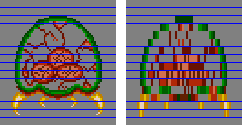
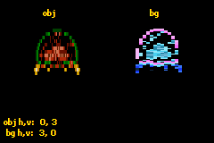
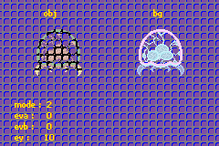
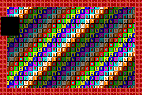
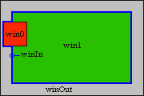

13. 图形特效
现在你已经知道如何在屏幕上放置精灵(对象)和背景了吧?那么,来点额外的特效让画面更生动如何?在讨论精灵和背景时,我们留下了一些未触及的标志位,也就是马赛克和混合标志。这些将在本章介绍。我们还会研究窗口,利用它你可以创建区域来遮罩背景或精灵。
马赛克
马赛克最好的描述就是让精灵或图块看起来呈块状。马赛克在二维方向上工作,参数为 wm 和 hm。这些数值将你的精灵或背景划分为 wm × hm 像素的块。每个块左上角的像素被用来填充该块的其余部分,从而产生块状效果。Fig 13.1显示了一个 1x4 的 metroid 精灵马赛克。蓝线标出了竖直的块边界。每个块的第一行被复制到块的其余部分,正如我所说的那样。马赛克效果的其他例子还有:当你击中带电敌人时《塞尔达:众神的三角力量》中的表现,或者当 X 改变形态时《Metroid Fusion》中的表现。

Fig 13.1: a 1×4 mosaiced metroid.使用马赛克:精灵/背景标志位与 REG_MOSAIC
要使用马赛克,你必须做两件事。首先,你需要启用马赛克。对于单个精灵,设置 OBJ_ATTR.attr0{C}。对于背景,设置 REG_BGxCNT{7}。然后通过 REG_MOSAIC 设置马赛克等级,其格式如下:
| F E D C | B A 9 8 | 7 6 5 4 | 3 2 1 0 |
| Ov | Oh | Bv | Bh |
| bits | name | define | description |
|---|---|---|---|
| 0-3 | Bh | MOS_BH# | Horizontal BG stretch. |
| 4-7 | Bv | MOS_BV# | Vertical BG stretch. |
| 8-B | Oh | MOS_OH# | Horizontal object stretch. |
| C-F | Ov | MOS_OV# | Vertical object stretch. |
拉伸(stretch)指的是基础像素被拉伸跨越了多少个像素。这对应于 *wm*−1 或 *hm*−1。每个效果用一个半字节(nybble)表示,因此拉伸值在 0 到 15 之间,马赛克的宽度和高度在 1 到 16 之间。
Enabling mosaic
对于背景,设置 REG_BGxCNT 的第 7 位。对于精灵,设置属性 0 的第 12 位。然后在 REG_MOSAIC 中设置马赛克等级。
一个小型马赛克演示
存在一个名为 mos_demo 的演示程序,演示了马赛克在对象和背景上的使用。
// mos_demo.c
// bg 0, cbb 0, sbb 31, pb 0: text
// bg 1, cbb 1, sbb 30, pb 1: bg metroid
// oam 0: tile 0-63: obj metroid
#include <stdio.h>
#include <tonc.h>
#include "metr.h"
void test_mosaic()
{
tte_printf("#{P:48,8}obj#{P:168,8}bg");
tte_set_margins(4, 130, 128, 156);
POINT pt_obj={0,0}, pt_bg={0,0};
POINT *ppt= &pt_obj;
while(1)
{
vid_vsync();
// control the mosaic
key_poll();
// switch between bg or obj mosaic
ppt= key_is_down(KEY_A) ? &pt_bg : &pt_obj;
ppt->x += key_tri_horz(); // inc/dec h-mosaic
ppt->y -= key_tri_vert(); // inc/dec v-mosaic
ppt->x= clamp(ppt->x, 0, 0x80);
ppt->y= clamp(ppt->y, 0, 0x80);
REG_MOSAIC= MOS_BUILD(pt_bg.x>>3, pt_bg.y>>3, pt_obj.x>>3, pt_obj.y>>3);
tte_printf("#{es;P}obj h,v: %2d,%2d\n bg h,v: %2d,%2d",
pt_obj.x>>3, pt_obj.y>>3, pt_bg.x>>3, pt_bg.y>>3);
}
}
void load_metr()
{
int ix, iy;
memcpy32(&tile_mem[1][0], metrTiles, metrTilesLen/4);
memcpy32(&tile_mem[4][0], metrTiles, metrTilesLen/4);
memcpy32(pal_obj_mem, metrPal, metrPalLen/4);
// create object: oe0
OBJ_ATTR *metr= &oam_mem[0];
obj_set_attr(metr, ATTR0_SQUARE | ATTR0_MOSAIC, ATTR1_SIZE_64, 0);
obj_set_pos(metr, 32, 24); // left-center
// create bg map: bg1, cbb1, sbb 31
for(ix=1; ix<16; ix++)
pal_bg_mem[ix+16]= pal_obj_mem[ix] ^ CLR_WHITE;
SCR_ENTRY *pse= &se_mem[30][3*32+18]; // right-center
for(iy=0; iy<8; iy++)
for(ix=0; ix<8; ix++)
pse[iy*32+ix]= (iy*8+ix) | SE_PALBANK(1);
REG_BG1CNT= BG_CBB(1) | BG_SBB(30) | BG_MOSAIC;
}
int main()
{
// setup sprite
oam_init(oam_mem, 128);
load_metr();
REG_DISPCNT= DCNT_BG0 | DCNT_BG1 | DCNT_OBJ | DCNT_OBJ_1D;
// set-up text: bg0, cbb0, sbb31
tte_init_chr4_b4_default(0, BG_CBB(2)|BG_SBB(31));
tte_init_con();
test_mosaic();
return 0;
}

Fig 13.2: mos_demo.在这个演示中我使用了两个 metroid。精灵 metroid 在左侧,颜色反转的背景 metroid 在右侧。我之前已经展示过如何设置精灵和背景,所以这里的步骤你应该能够跟上,因为没有新内容。嗯,除了在 OBJ_ATTR.attr0 和 REG_BG0CNT 中设置马赛克标志位,这里我用粗体标出了。
马赛克效果在 test_mosaic() 中控制。我使用两个 2D 点来跟踪当前的马赛克等级。方向键用于增加或减少马赛克等级;仅使用方向键设置对象的马赛克,按住 A 则设置背景的马赛克。
从代码设计的角度说,我本可以在这里使用两个 if 代码块,一个用于对象,一个用于背景,但我也可以通过指针切换马赛克上下文,这能省下一些代码。指针万岁。此外,坐标采用 .3 定点数格式,这正是我用来减慢马赛克等级变化速度的方法。同样,我本可以使用定时器变量和更多的检查来查看它们是否达到阈值,但定点数定时器要容易得多,而且在我看来也更干净。
顺便说一下,你真的应该在真机上看看这个演示。不知为何,VBA 和 no$gba 在处理马赛克时都有缺陷。在 VBA 1.7.2 之后,它在水平精灵马赛克上存在问题。我确实见过真机与滚动马赛克背景之间不一致的情况,但记不清在哪里看到的了。至于 no$gba,垂直马赛克似乎对精灵和背景都被禁用了。
Emulators and mosaic
VBA 和 no$gba 这两个最流行的 GBA 模拟器在处理马赛克时都有问题。小心脚下。
混合
如果你对游戏或图形不完全陌生,你可能听说过alpha 混合(alpha blending)。它允许你合并两个重叠图层的颜色值,从而产生透明度(也称为半透明,因为完全透明的东西是不可见的)。某些位图类型还带有 alpha 通道,用来指示相关像素的透明度或不透明度。
混合背后的基本思想是:你有两个相互重叠的图层 A 和 B。认为 A 在 B 的上方。该区域中一个像素的颜色值定义为
| (13.1) | C = wA·A + wB·B, |
其中 wA 和 wB 是图层的权重(weights)。权重通常是归一化的(在 0 到 1 之间),0 表示完全透明,1 表示完全可见。用这种方式来思考颜色分量也很方便。以下是可以对它们做的一些事情:
| wA | wB | effect |
|---|---|---|
| 1 | 0 | layer A fully visible (hides B; standard) |
| 0 | 1 | layer B fully visible (or A is invisible) |
| α | 1−α | Alpha blending. α is opacity in this case. |
注意在这些示例中权重之和为 1,因此最终颜色 C 也介于 0(黑)和 1(白)之间。正如我们将看到的,有些情况下你会超出这些范围;如果发生这种情况,数值将被裁剪到标准范围。
GBA 混合
背景总是启用混合。要启用精灵混合,设置 OBJ_ATTR.attr0{a}。有三个控制混合的寄存器,不幸的是它们有很多不同的名字。我使用的名字是 REG_BLDCNT、REG_BLDALPHA 和 REG_BLDY。其他名字是 REG_BLDMOD、REG_COLEV 和 REG_COLEY,有时后两个中的“E“会被去掉。请当心。总之,第一个寄存器说明应在哪些图层以及如何执行混合,后两个包含权重。哦,由于 GBA 不做浮点运算,权重是 定点数,采用 1.4 格式。当然仍受限于 0 和 1,因此有 17 个混合等级。
| F E | D | C | B | A | 9 | 8 | 7 6 | 5 | 4 | 3 | 2 | 1 | 0 |
| - | bBD | bOBJ | bBG3 | bBG2 | bBG1 | bBG0 | BM | aBD | aObj | aBG3 | aBG2 | aBG1 | aBG0 |
| bits | name | define | description |
|---|---|---|---|
| 0-5 | aBG0-aBD | BLD_TOP# | The A (top) layers. BD, by the way, is the back drop, a solid plane of color 0. Set the bits to make that layer use the A-weights. Note that these layers must actually be in front of the B-layers, or the blend will fail. |
| 6-7 | BM | BLD_OFF, BLD_STD, BLD_WHITE, BLD_BLACK, BLD_MODE# |
Blending mode.
|
| 8-D | bBG0-bBD | BLD_BOT# | The B (bottom) layers. Use the B-weights. Note that these layers must actually lie behind the A-layers, or the blend will not work. |
REG_BLDALPHA 和 REG_BLDY 寄存器以 eva、evb 和 ey 的形式保存混合权重,全部采用 1.4 定点数格式。不,我不知道它们为什么叫这个名字;它们就叫这个。
| F E D | C B A 9 8 | 7 6 5 | 4 3 2 1 0 |
| - | evb | - | eva |
| bits | name | define | description |
|---|---|---|---|
| 0-4 | eva | BLD_EVA# | Top blend weight. Only used for normal blending |
| 8-C | evb | BLD_EVB# | Bottom blend weight. Only used for normal blending |
| F E D C B A 9 8 7 6 5 | 4 3 2 1 0 |
| - | ey |
| bits | name | define | description |
|---|---|---|---|
| 0-4 | ey | BLDY# | Top blend fade. Used for white and black fades. |
混合注意事项
混合是个不错的特性,但请记住以下几点。
- A 图层必须位于 B 图层前方。只有这样混合才会真正发生。所以注意你的优先级。
- 在 alpha 混合模式(模式 1)下,混合只在图层 A 和图层 B 的重叠、非透明像素上发生。非重叠像素仍保持其正常颜色。
- 精灵与背景受到的影响不同。特别是,
REG_BLDCNT{6,7} 指定的混合模式只应用于非重叠部分(因此实际上只有淡入淡出起作用)。对于重叠像素,标准混合总是生效,无论当前混合模式如何。 - 如果你正在使用窗口,需要在 REG_WININ 或 REG_WINOUT 中设置第 5 位和/或第 13 位,混合才能工作。
例行的演示
// bld_demo.c
// bg 0, cbb 0, sbb 31, pb 15: text
// bg 1, cbb 2, sbb 30, pb 1: metroid
// bg 2, cbb 2, sbb 29, pb 0: fence
// oam 0: tile 0-63: obj metroid
#include <stdio.h>
#include <tonc.h>
#include "../gfx/metr.h"
void test_blend()
{
tte_printf("#{P:48,8}obj#{P:168,8}bg");
tte_set_margins(16, SCR_H-4-4*12, SCR_W-4, SCR_H-4);
u32 mode=0;
// eva, evb and ey are .4 fixeds
// eva is full, evb and ey are empty
u32 eva=0x80, evb= 0, ey=0;
REG_BLDCNT= BLD_BUILD(
BLD_OBJ | BLD_BG0, // Top layers
BLD_BG1, // Bottom layers
mode); // Mode
while(1)
{
vid_vsync();
key_poll();
// Interactive blend weights
eva += key_tri_horz();
evb -= key_tri_vert();
ey += key_tri_fire();
mode += bit_tribool(key_hit(-1), KI_R, KI_L);
// Clamp to allowable ranges
eva = clamp(eva, 0, 0x81);
evb = clamp(evb, 0, 0x81);
ey = clamp(ey, 0, 0x81);
mode= clamp(mode, 0, 4);
tte_printf("#{es;P}mode :\t%2d\neva :\t%2d\nevb :\t%2d\ney :\t%2d",
mode, eva/8, evb/8, ey/8);
// Update blend mode
BFN_SET(REG_BLDCNT, mode, BLD_MODE);
// Update blend weights
REG_BLDALPHA= BLDA_BUILD(eva/8, evb/8);
REG_BLDY= BLDY_BUILD(ey/8);
}
}
void load_metr()
{
// copy sprite and bg tiles, and the sprite palette
memcpy32(&tile_mem[2][0], metrTiles, metrTilesLen/4);
memcpy32(&tile_mem[4][0], metrTiles, metrTilesLen/4);
memcpy32(pal_obj_mem, metrPal, metrPalLen/4);
// set the metroid sprite
OBJ_ATTR *metr= &oam_mem[0]; // use the first sprite
obj_set_attr(metr, ATTR0_SQUARE | ATTR0_BLEND, ATTR1_SIZE_64, 0);
obj_set_pos(metr, 32, 24); // mid-center
// create the metroid bg
// using inverted palette for bg-metroid
int ix, iy;
for(ix=0; ix<16; ix++)
pal_bg_mem[ix+16]= pal_obj_mem[ix] ^ CLR_WHITE;
SCR_ENTRY *pse= &se_mem[30][3*32+18]; // right-center
for(iy=0; iy<8; iy++)
for(ix=0; ix<8; ix++)
pse[iy*32+ix]= iy*8+ix + SE_PALBANK(1);
REG_BG0CNT= BG_CBB(0) | BG_SBB(30);
}
// set-up the fence background
void load_fence()
{
// tile 0 / ' ' will be a fence tile
const TILE fence=
{{
0x00012000, 0x00012000, 0x00022200, 0x22220222,
0x11122211, 0x00112000, 0x00012000, 0x00012000,
}};
tile_mem[2][64]= fence;
se_fill(se_mem[29], 64);
pal_bg_mem[0]= RGB15(16, 10, 20);
pal_bg_mem[1]= RGB15( 0, 0, 31);
pal_bg_mem[2]= RGB15(16, 16, 16);
REG_BG2CNT= BG_CBB(2) | BG_SBB(29);
}
int main()
{
oam_init(oam_mem, 128);
load_metr();
load_fence();
tte_init_chr4_b4_default(0, BG_CBB(0)|BG_SBB(31));
tte_init_con();
REG_DISPCNT= DCNT_MODE0 | DCNT_BG0 | DCNT_BG1 | DCNT_BG2 |
DCNT_OBJ | DCNT_OBJ_1D;
test_blend();
return 0;
}

Fig 13.3: blend demo; mode=2, eva=0, evb=0, ey=10.和往常一样,有一份演示程序配合所有这些内容。bld_demo 的特点是:两个 metroid(左边是精灵,右边(调色板反转)在背景 0 上)位于一个栅栏状背景(准确说是 bg 1)上,并允许你独立修改模式以及 3 个权重。顺便说一下,模式显示在左上角。控制方式如下:
| left, right | changes eva. Note that eva is at maximum initially. |
|---|---|
| down,up | changes evb. |
| B,A | Changes ey |
| L,R | Changes mode. |
值得关注的函数是 test_blend()。按键处理以及混合设置的修改都在这里进行。与 mos_demo 类似,使用 .3 定点数作为混合权重变量,以将变化速率降低到更舒适的水平。设置混合寄存器本身时,我使用了 BUILD() 宏和 BF_SET(),对于此目的来说它们足够好。当然,在这里写包装函数也是轻而易举的。大部分代码都相当标准;只需把玩混合模式和权重,看看会发生什么。
请务必注意,正如我之前所说,精灵 metroid 受到的影响与背景 metroid 不同。背景-背景混合完全按照模式应有的方式工作;而精灵,另一方面,只要它们与栅栏的像素重叠,就总是发生混合,其余部分遵循模式,这正是我在注意事项中告诉你的。
窗口
窗口允许你将屏幕划分为矩形区域,也就是窗口。有两个基本窗口:win0 和 win1。还有第三种窗口,即对象窗口。它利用精灵的可见像素创建一个窗口。你可以通过分别设置 REG_DISPCNT{d,e,f} 来启用这些窗口。
矩形窗口由其左、右、上、下边界定义。除非你是那种人,认为说一个矩形只有两条边很可笑:里边和外边。事实上,这比你想象的更真实。win0 和 win1 的并集是内部窗口。还有外部窗口,也就是其余所有部分。换句话说:
| winIn = win0 | win1 winOut = ~(winIn) |
|
 Fig 13.4a: showing win0, win1, and win_out windows. |
 Fig 13.4b: win0 in red, win1 in green, winIn is win0 | win1 (blue edge), winOut in grey. |
窗口边界
win0 和 win1 都有 2 个寄存器定义它们的边界。按顺序是 REG_WIN0H (0400:0040h)、REG_WIN1H (0400:0042h)、REG_WIN0V (0400:0044h) 和 REG_WIN1V (0400:0046h),其布局如下:
| reg | F E D C B A 9 8 | 7 6 5 4 3 2 1 0 |
|---|---|---|
REG_WINxH |
left | right |
REG_WINxV |
top | bottom |
| bits | name | description | |
|---|---|---|---|
| 0-7 | right | Right side of window (exclusive) | |
| 8-F | left | Left side of window (inclusive) | |
| - | |||
| 0-7 | bottom | Bottom side of window (exclusive) | |
| 8-F | top | Top side of window (inclusive) | |
所以每个值用一个字节。这里的字节指的是无符号字符(unsigned char)。窗口的内容从左上角开始绘制,直到但不包括右下角。你必须意识到,当(例如)右值小于左值时,情况也是如此。在这种情况下,会发生回绕,该行上的所有内容都在窗口内,除了 R 和 L 之间的像素。如果 R < L 且 B < T,那么你会得到一个十字形状的窗口。
窗口内容
窗口可能包含的内容是背景 0-3 和对象。没什么好奇怪的,对吧?我们总共有这些区域:win0、win1、winOut 和 winObj。REG_WININ (0400:0048h) 控制 win0 和 win1,REG_WINOUT (0400:004ah) 负责 winOut 和 winObj。每种内容类型有一位,外加一位用于混合,如果你想在该特定窗口的内容上使用混合,就需要它。
| register | F E | D | C | B | A | 9 | 8 | 7 6 | 5 | 4 | 3 | 2 | 1 | 0 |
|---|---|---|---|---|---|---|---|---|---|---|---|---|---|---|
| bits | - | Bld | Obj | BG3 | BG2 | BG1 | BG0 | - | Bld | Obj | BG3 | BG2 | BG1 | BG0 |
REG_WININ |
- | win1 | - | win0 | ||||||||||
REG_WINOUT |
- | winObj | - | winOut | ||||||||||
| bits | name | define | description |
|---|---|---|---|
| 0-5 | BGx, Obj, Bld | WIN_BGx, WIN_OBJ, WIN_BLD, WIN_LAYER# | Windowing flags. To be used with all bytes in REG_WININ and REG_WINOUT. |
这里几乎不需要宏或位定义,因为它们并不是真正必要的。不过 tonc_memdef.h 中确实有这些:
#define WIN_BUILD(low, high) \
( ((high)<<8) | (low) )
#define WININ_BUILD(win0, win1) WIN_BUILD(win0, win1)
#define WINOUT_BUILD(out, obj) WIN_BUILD(out, obj)
关于窗口,还有几件事你应该知道。首先,当你在 REG_DISPCNT 中开启窗口时,什么都不会显示。这有两个原因。首先,边界寄存器全为 0,因此整个屏幕基本上就是 winOut。其次,这一点非常重要:背景或对象只会显示在启用了它的窗口中!这意味着除非在 REG_WININ 或 REG_WINOUT 中至少设置了一些位,否则什么都不会显示。正如我们将在演示中看到的那样,这为你提供了一种有效的隐藏内容的方法。还有第三件你必须记住的事,即 win0 优先于 win1,而 win1 又优先于 winOut。我还不确 winObj 在这个顺序中处于什么位置。
Windowing necessities
要让窗口为你工作,你需要做以下事情:
- 在
REG_DISPCNT中启用窗口 - 通过设置
REG_WININ和REG_WINOUT中的相应位,指明你希望内容显示在哪些窗口中。如果启用了窗口,你必须至少在这里设置一些位,否则什么都不会显示! - 在
REG_WINxH/V中设置所需的窗口大小。如果不设置,所有内容都会被视为在 Out 窗口中。
注意事项
当上边界或下边界在屏幕之外时,会发生一些非常奇怪的事情。实际上是多个奇怪的事情,详见真机上的演示!
- 如果上边界在 [-29, 0⟩ 范围内(即 [227, 255]),窗口将完全不被渲染。同样,如果下边界在这个范围内,窗口将覆盖整个屏幕高度。我说不清确切原因,但由于 VCount 也在 227 处停止,这可能与它有关。
- 另外,如果你将下边界从 161 移动到 160,窗口也将覆盖整个长度,但只持续一帧左右。
- 上述各点假设 T<B。如果上边界更大,则效果相反。
窗口异常（模拟器上不会出现）
这种行为在我测试过的模拟器上不会出现。
VBA 会裁剪窗口,正如常识让你相信的那样。(当然,常识也会告诉你太阳绕地球转,或者星星是巨大黑色画布上的针孔。常识其实并不常见)。
MappyVM 和 BoycottAdvance 只是在任何边界超出屏幕时直接移除窗口。
演示:我口袋里有枚火箭
如果你还没注意到,我喜欢《Metroid》系列。我真的很喜欢《Metroid》系列。如果你玩过《Super Metroid》,很可能用过 X 射线镜,它可以让你看穿各个图层,更轻松地找到物品和秘密通道。猜猜这是怎么做到的?没错,窗口。窗口演示 win_demo 本质上做的是同样的事情。背景图层后面藏着一枚火箭道具,你有一个可以围着屏幕移动的 X 射线矩形,这样你就能找到它。
控制方式很简单:使用方向键移动窗口;START 重新定位火箭。我还加入了更精细的移动(A + 方向键),这样你可以看到窗口在某些位置表现出的奇怪行为。
| dir | Moves the rectangle. |
|---|---|
| A + dir | Move rectangle by tapping for finer control. |
| start | Randomly change the position of the rocket. |
下面给出的是该演示的大部分代码。我去掉了设置背景和精灵的函数,因为它们里没有任何你之前没见过的内容。前面的 fig 13.4a 是该演示运行时的截图。
// win_demo.c
// bg 0, cbb 0, sbb 2, pb 0: numbered forground
// bg 1, cbb 0, sbb 3, pb 0: fenced background
// oam 0: tile 0-3: rocket
// win 0: objects
// win 1: bg 0
// win out : bg 1
#include <tonc.h>
#include "nums.h"
#include "rocket.h"
typedef struct tagRECT_U8 { u8 ll, tt, rr, bb; } ALIGN4 RECT_U8;
// window rectangle regs are write only, so buffers are necessary
// Objects in win0, BG 0 in win1
RECT_U8 win[2]=
{
{ 36, 20, 76, 60 }, // win0: 40x40 rect
{ 12, 12 ,228, 148 } // win1: screen minus 12 margin.
};
// gfx loaders omitted for clarity
void init_front_map(); // numbers tiles
void init_back_map(); // fence
void init_rocket(); // rocket
void win_copy()
{
REG_WIN0H= win[0].ll<<8 | win[0].rr;
REG_WIN1H= win[1].ll<<8 | win[1].rr;
REG_WIN0V= win[0].tt<<8 | win[0].bb;
REG_WIN1V= win[1].tt<<8 | win[1].bb;
}
void test_win()
{
win_copy();
while(1)
{
key_poll();
vid_vsync();
// key_hit() or key_is_down() 'switch'
// A depressed: move on direction press (std movement)
// A pressed : moves on direction hit (fine movement)
int keys= key_curr_state();
if(key_is_down(KEY_A))
keys &= ~key_prev_state();
if(keys & KEY_RIGHT)
{ win[0].ll++; win[0].rr++; }
else if(keys & KEY_LEFT )
{ win[0].ll--; win[0].rr--; }
if(keys & KEY_DOWN)
{ win[0].tt++; win[0].bb++; }
else if(keys & KEY_UP )
{ win[0].tt--; win[0].bb--; }
// (1) randomize rocket position
if(key_hit(KEY_START))
obj_set_pos(&oam_mem[0],
qran_range(0, 232), qran_range(0, 152));
win_copy();
}
}
int main()
{
// obvious inits
oam_init();
init_front_map();
init_back_map();
init_rocket();
// (2) windowing inits
REG_DISPCNT= DCNT_BG0 | DCNT_BG1 | DCNT_OBJ | DCNT_OBJ_1D |
DCNT_WIN0 | // Enable win 0
DCNT_WIN1; // Enable win 1
REG_WININ= WININ_BUILD(WIN_OBJ, (WIN_BG0);
REG_WINOUT= WINOUT_BUILD(WIN_BG1, 0);
win_copy(); // Initialize window rects
test_win();
return 0;
}
窗口的初始化在标号 2 处完成:在 REG_DISPCNT 中启用 win0 和 win1,对象在 win 0 中,背景 0 在 win 1 中,背景 1 在 winOut 中。窗口的大小在每一帧通过 win_copy() 设置。我使用两个矩形变量来跟踪窗口的位置,因为窗口矩形寄存器本身是只写的。结果再次参见 fig 13.4。
通常,对象显示在背景前方。然而,由于对象现在只设置在 win 0 内显示,它们在其他任何地方都被有效隐藏:只有当火箭与 win 0 的矩形重叠时,你才会看到火箭或其部分。此外,你会注意到,由于 win 0 中只设置了对象,窗口本身完全是黑色的。
演示的其余部分相当平淡。我可以解释当按住 A 时,用之前按键状态对变量 keys 进行掩码,让我在 key_hit() 和 key_is_down() 函数之间切换,从而为我提供了 X 射线窗口在直接移动和精细移动之间切换所需的功能,但这并不那么有趣,而且与本演示的要点无关。另一件与本演示要点无关、但确实值得一提的,是火箭位置的随机化。
随机数
计算机上的随机数是个有点新奇的概念。计算机的全部意义在于拥有一台可靠的计算机,而随机数几乎是它的对立面。计算机生成的随机数也称为伪随机(pseudo-random),因为它们并非内在随机,只是确定性地生成以显得随机。有一些统计测试可以检验给定例程是否足够随机。然而,我们谈论的不是核物理,而是游戏编程。我们主要需要的是某种东西,比如让敌人以任何可辨别的模式之字形移动;它能否杀死蒙特卡洛模拟完全无关紧要。
一类生成器是线性同余生成器(linear congruential generators),遵循模式 Ni+1 = (a·Ni + c)%m,其中 Ni∈[0, m⟩。通过适当选取参数 a、c 和 m,该例程可以相当充分。如果你在任何标准库中遇到过 rand() 函数,很可能就是其中之一。它们不仅易于实现,而且很可能也很快。
下面的例程 qran() 取自我的数值方法书 Numerical Recipes,第 275 页,在那里它被标记为一个快速而简陋的生成器,但还算充分。它由一个加法和一个乘法组成(m=232,因此自动完成),速度非常快。实际返回的数字是 N 的高 15 位,因为高位显然比低位更随机,也因为 15 给出了 [0,32767] 的范围,据我所知,这是一个非官方的标准。注意还有第二个函数 sqran(),用于为生成器播种(seed)。由于过程本身仍是确定性的,你需要一个种子来确保不会每次都得到相同的序列。除非你确实想要那样。如果你想想,这并非奇怪的想法:例如,你可以用它来生成地图。与其存储整张地图以便每次加载时看起来都一样,你只需存储种子就完成了。这正是 Star Control 2 中行星地形的生成方式;我非常怀疑是否可能存储它所有 1000 多个行星的位图。这就是为什么 sqran() 还返回当前的 N,以便必要时稍后重置它。
// from tonc_core.h/.c
// A Quick (and dirty) random number generator and its seeder
int __qran_seed= 42; // Seed / rnd holder
// Seed routine
int sqran(int seed)
{
int old= __qran_seed;
__qran_seed= seed;
return old;
}
//! Quick (and very dirty) pseudo-random number generator
/*! \return random in range [0,8000h>
*/
INLINE int qran()
{
__qran_seed= 1664525*__qran_seed+1013904223;
return (__qran_seed>>16) & 0x7FFF;
}
我再说一遍,这不是一个非常先进的随机数生成器,但对于我的需求来说已经足够。如果你想要一个更好(但更慢)的,试试 Mersenne Twister。你可以在 PERN 的 new sprite page 上找到一个不错的实现。
范围随机数
得到一个随机数是一回事;得到一个特定范围内的随机数是另一回事。当然,这看起来足够简单:例如,对于 0 到 240 之间的数,你会用 modulo 240。然而,由于 GBA 没有硬件除法,它将消耗相当多的周期。幸运的是,有一个简单的解决办法。
我说过 qran(),就像 stdlib 的 rand() 一样,范围是 0 到 0x8000。你也可以将其视为 0 到 1 之间的范围,如果你将它们解释为 .15 定点数。通过乘以 240,你将得到所需的范围随机数,而这只花费一次乘法和一次移位。这种技术适用于每个随机数生成器,只要你注意其最大范围和整数溢出(无论如何你都应该注意)。Tonclib 的这个版本叫做 qran_range()。
//! Ranged random number
/*! \return random in range [\a min, \a max>
* \note (max-min) must be lower than 8000h
*/
INLINE int qran_range(int min, int max)
{ return (qran()*(max-min)>>15)+min; }
在演示中,我两次使用 qran_range() 来使精灵位置始终保持在屏幕内。虽然位置本身可以通过一些调查提前预测,但我认为不会那么容易。如果你真的下了那种功夫,我会说你值得为此获得点什么。如果你重新加载几次演示,你会注意到位置序列总是相同的。这就是为什么它们被称为伪随机。要获得不同的序列,种子值应该不同。我在这里甚至一次都没有播种,因为这对本演示并不重要,但通常的诀窍是用涉及时间的东西播种:例如,在真正开始游戏之前,从可能前置的各种介绍屏幕开始计数的帧数或周期数。即使是种子的微小差异也能产生截然不同的序列。
结论
从技术上讲,在游戏中你可能并不真正需要马赛克、混合或窗口,但它们非常适合微妙的效果,比如“受击“或聚光灯。它们对于各种类型的场景过渡也非常有用;利用混合寄存器可以轻松实现淡出到黑色。利用窗口的各种 HBlank 效果也很有趣,在每个 HBlank 改变矩形,产生光束、横向擦除或圆形窗口。然而,要做到这一点,你需要知道如何使用中断。或者一种称为 HDMA 的 DMA 特例,这正是接下来要讲的内容。